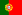

Medalistas masculinos
C-1
| Evento | Ouro | Prata | Bronze |
|---|---|---|---|
| Rio 2016 | Denis Gargaud Chanut (França)  |
Matej Beňuš (Eslováquia) | Takuya Haneda (Japão)  |
| Tóquio 2020 | Benjamin Savšek (Eslovênia) | Lukáš Rohan (República Checa)  |
Sideris Tasiadis (Alemanha)  |
K-1
| Evento | Ouro | Prata | Bronze |
|---|---|---|---|
| Rio 2016 | Joseph Clarke (Grã-Bretanha) | Peter Kauzer (Eslovênia) | Jiří Prskavec (República Checa) |
| Tóquio 2020 | Jiří Prskavec (República Checa) |
Jakub Grigar (Eslováquia) | Hannes Aigner (Alemanha) |
Velocidade
C-1 1000m
| Evento | Ouro | Prata | ronze |
|---|---|---|---|
| Rio 2016 | Sebastian Brendel (Alemanha) |
Isaquias Queiroz (Brasil)  |
Ilia Shtokalov (Rússia)  |
| Tóquio 2020 | Isaquias Queiroz (Brasil) |
Liu Hao (China)  |
Serghei Tarnovschi (Moldávia)  |
K-1 200m
| Evento | Ouro | Prata | Bronze |
|---|---|---|---|
| Rio 2016 | Liam Heath (Grã-Bretanha) | Maxime Beaumont (França) |
Saúl Craviotto (Espanha)  Ronald Rauhe (Alemanha)
Ronald Rauhe (Alemanha)
|
| Tóquio 2020 | Sándor Tótka (Hungria)  |
Manfredi Rizza (Itália)  |
Liam Heath (Grã-Bretanha) |
K-1 1000m
| Evento | Ouro | Prata | Bronze |
|---|---|---|---|
| Rio 2016 | Marcus Walz (Espanha) |
Josef Dostál (República Checa) |
Roman Anoshkin (Rússia) |
| Tóquio 2020 | Bálint Kopasz (Hungria) |
Ádám Varga (Hungria)
| Fernando Pimenta (Portugal)  |